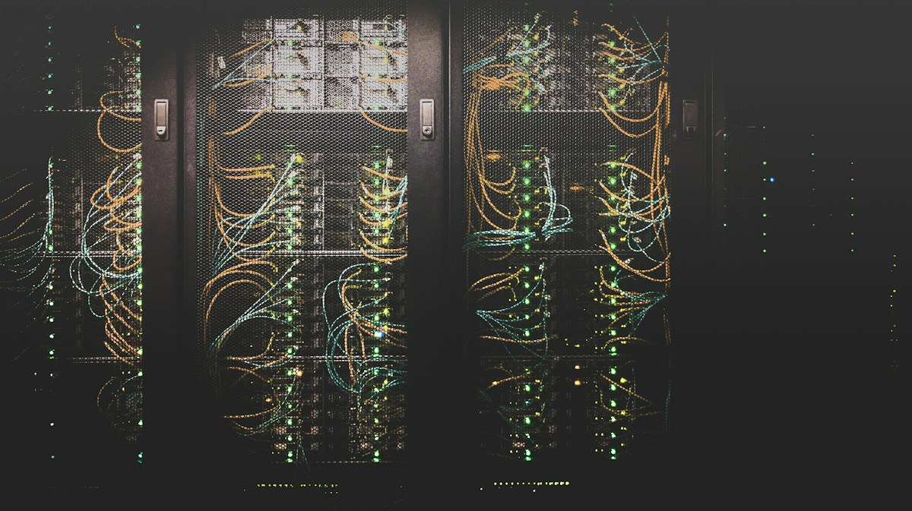

Nos cuenta.
¿Qué le está quitando tiempo? ¿Qué quiere mejorar? Empezamos por escuchar su realidad.
SU EQUIPO DE TECNOLOGÍA, EN COSTA RICA
Usted hace crecer su negocio.
Nosotros le ayudamos con la tecnología que lo mueve.

CONECTAMOS LO QUE IMPORTADetrás de su empresa,
un equipo de verdad.
Algunas de las empresas que han confiado en STM.
MENOS COMPLICACIONES. MÁS POSIBILIDADES.
Del equipo que no enciende al siguiente paso de su empresa. Encontramos una solución con usted.
Un problema técnico no debería detener su día. Le acompañamos con atención remota y en sitio para resolver lo que necesita su operación.
Diseñamos e implementamos la infraestructura que conecta a las personas, los equipos y las sedes de su negocio.
Como partner de Microsoft, le ayudamos a elegir sus licencias y aprovechar Microsoft 365 para que su equipo comparta, colabore y trabaje con herramientas bien configuradas.
Conectamos información y procesos con Power BI, Power Apps y Power Automate para ayudarle a dar el siguiente paso.

MUCHO MÁS QUE COMPUTADORAS
STM nació en Costa Rica en el año 2000 con una idea sencilla: ayudar a las personas a resolver sus necesidades de tecnología.
Lo que empezó con soporte técnico se convirtió en acompañamiento para empresas. Hoy unimos experiencia en equipos, redes y herramientas de Microsoft con nuevas formas de trabajar con datos y automatización.
Seguimos creyendo en lo mismo:
escuchar, resolver y dar respaldo.
ASÍ DE SENCILLO EMPEZAMOS
¿Qué le está quitando tiempo? ¿Qué quiere mejorar? Empezamos por escuchar su realidad.
Revisamos lo que necesita y le proponemos un camino claro, acorde con su empresa.
Implementamos la solución y acompañamos a su equipo para que pueda aprovecharla.
EL SIGUIENTE PASO EMPIEZA AQUÍ
Un problema por resolver.
Una idea por desarrollar.
Un equipo en quien confiar.
Belén, Heredia · Costa Rica
Revise su mensaje y elija cómo compartirlo con Olger. Usted realiza el envío.
Enviar por WhatsApp Enviar por correo ↗POR SI SE LO ESTABA PREGUNTANDO
Sí. Podemos conversar tanto sobre una necesidad puntual como sobre el acompañamiento tecnológico de su empresa. El alcance se define según lo que necesita.
Trabajamos con ambas modalidades. Según el problema, la ubicación y el alcance, coordinamos la forma de atención adecuada para su empresa.
Sí. Revisamos las herramientas que necesita su equipo para orientar el licenciamiento y acompañarle con la configuración y el uso.
Claro. Cuéntenos qué información maneja o qué proceso quiere mejorar. Revisamos el caso para proponer un alcance y las herramientas adecuadas.